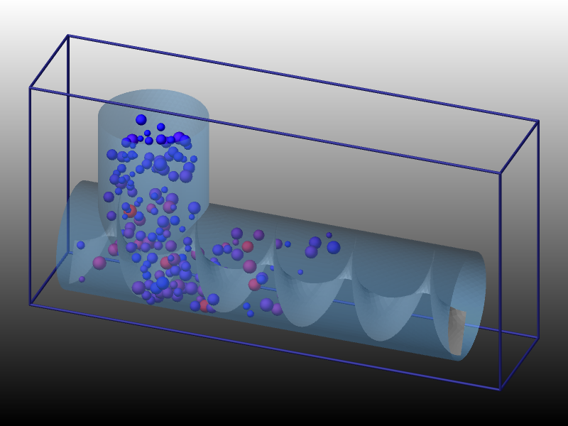
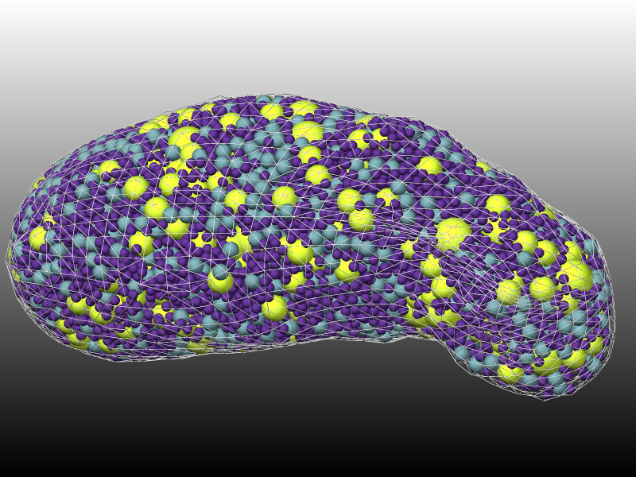
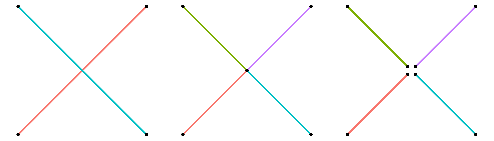
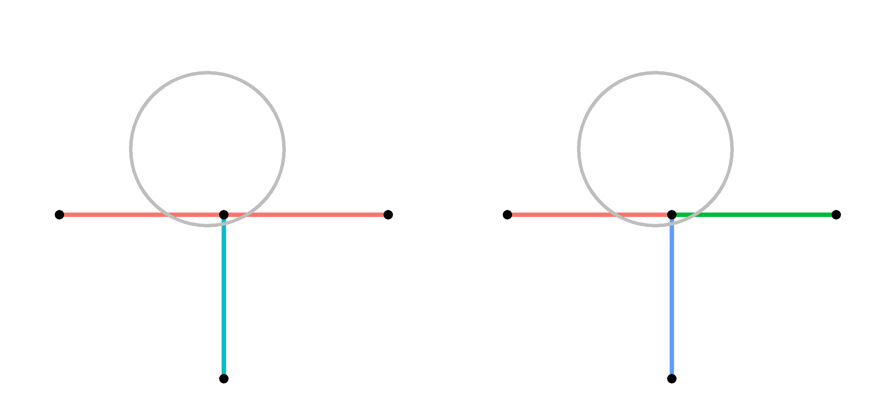
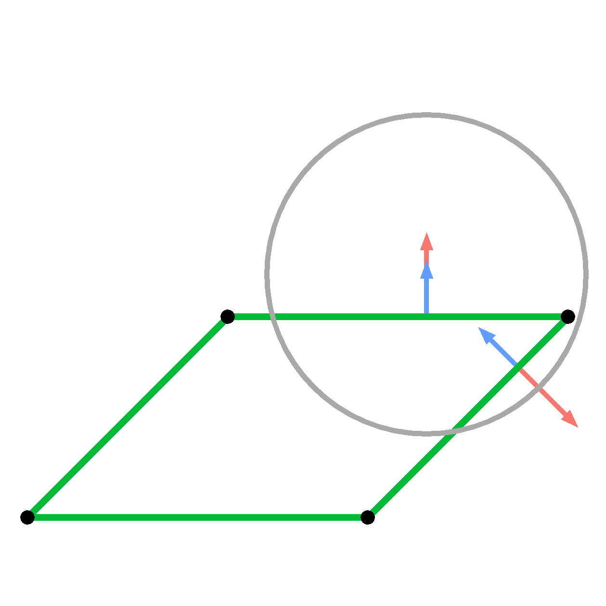
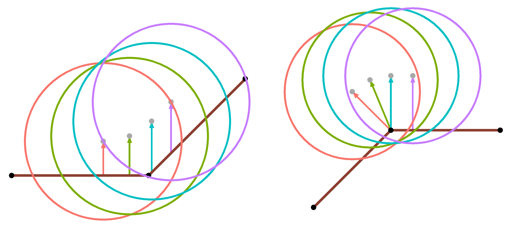
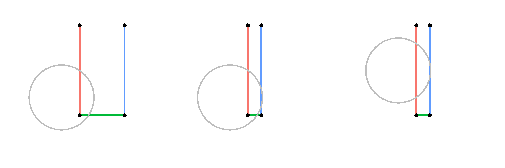

\(\renewcommand{\AA}{\text{Å}}\)
10.5.3. Granular surfaces
Added in version 4Jul2026.
As explained on the Howto granular doc page, granular systems are composed of finite-size spherical or aspherical particles with explicit diameters, as opposed to point particles. This means they have an angular velocity and torque can be imparted to them to cause them to rotate.
The Howto granular doc page lists various atom, pair, fix, and compute styles useful for creating granular models with such particles.
This page explains how you can also define granular surfaces which are a collection of triangles (3d systems) or line segments (2d systems), which act as boundaries interacting with the particles. This is particularly useful for defining a complex wall or boundary geometry. As described below, particle/surface interactions can be specified with similar options as those for particle/particle interactions.
In the examples directory, several examples of these boundaries are found in the gransurf folder. In particular, this includes a screw feeder geometry where a cylindrical container is being fed a stream of granular particles from above which are conveyed forward using a rotating screw. An illustration is rendered in the below figure using the dump image command.
{kind=link}

Furthermore, as another illustration of possible applications, an image is included of a complex geometry based on the actual shape of the Itokawa asteroid. Here, a surface is used to create a container which is filled by a polydisperse granular packing.
{kind=link}

Global versus local surfaces
A key point to understand is that LAMMPS supports two forms of granular surfaces. You cannot use both in the same simulation.
The first is global which means that each processor stores a copy of all the triangles/lines. This is suitable when only a modest number of triangles/lines is needed. They can be large triangles/lines, any of which span a significant fraction of the simulation box size in one or more dimensions.
The second is local which means that the collection of triangles/lines is distributed across processors in the same manner that particles are distributed. Each processor is assigned to a sub-domain of the simulation box and owns whichever triangles/lines have their center point in the processor’s sub-domain. Similar to particles, each processor may also own ghost copies of triangles/lines whose finite size overlaps with the processor’s sub-domain. The total number of triangles/lines in the system can now be very large. For effective distribution and minimal communication, all the triangles/lines should be small, no more than a few particle diameters in size. If even one larger triangle or line is defined then the neighbor list cutoff and communication cutoff will be set correspondingly larger, which can slow down the simulation. Note that a large triangle or line can instead be defined as multiple connected smaller triangles or lines without changing the topology of the collective surface. The multi neighbor option may be useful, however, in such scenarios.
One of these two commands must be specified to use global or local surfaces in your granular simulation:
The fix surface/global command reads in the global surfaces in one of two ways. The first option is from a molecule file(s) previously defined by the molecule command. The file should define triangles or lines with header keywords and a Triangles or Lines section. The second option is from a text or binary STL (stereolithography) file which defines a set of triangles. It can only be used with 3d simulations.
The fix surface/local command defines local surface in one of three ways. The first two options are the same molecule and STL files explained in the previous paragraph. In this case, the list of triangles/lines is distributed across processors based on the center point of each triangle/line. The third option is to include them in a LAMMPS data file which has been previously read in via the read_data command. If the file has a Triangles or Lines section, then triangles/lines will be read in and distributed along with any particles the data file includes, assuming an appropriate atom_style has been specified, as explained below.
Surface attributes
For both global and local surfaces, each triangle/line is assigned a type and a molecule ID. This is done when surfaces are read-in from a molecule, STL, or data file. Since STL files do not define types or molecule IDs, the fix surface/global and fix surface/local commands specify the type and molecule ID that will be assigned to the read-in triangles. The fix surface/global command also allows use of the fix_modify type/region command to assign types based on a geometric region. Since local surfaces are effectively particles, the set command can be used to alter the type or molecule ID of any triangle or line.
For both global and local surfaces, types are used to define the style of granular interactions for individual triangles/lines. Different types, and thus styles, can be used within a single object consisting of connected triangles/lines.
Molecule IDs can be used to limit which triangles/lines are considered to be “connected”. They are therefore intended to be assigned uniquely to each inter-connected set of triangles/lines, as if each object were a “molecule”. See the Surface Connectivity section below.
For local surfaces, the molecule ID can be used to define groups which enables assignment of different motions to different surface objects. See the Surface Motion section below. Various other LAMMPS commands operate on groups or molecules and can thus be used to gather statistics about or output information about individual surface objects.
Atom styles for granular surfaces
For all three ways of defining local surfaces, the triangles/lines are stored internally in LAMMPS as triangle-style or line-style particles. This means you must use a hybrid atom style which includes one of these two sub-styles (for 3d or 2d):
atom_style tri for 3d simulations
atom_style line for 2d simulations
The atom_style hybrid command must also define a atom_style sphere sub-style for the granular particles which interact with the surfaces.
Note that for molecule or STL file input, the fix surface/local command reads the file(s) and uses the values for each surface to create a single new triangle or line particle. For data file input, the triangle/line particles are created when the data file is read.
For granular simulations with global surfaces, a hybrid atom style which defines triangle-style or line-style particles should NOT be used. Typically only an atom_style sphere command is needed to define the properties of particles in the simulation. The triangles/lines are stored by the fix surface/global command and not as triangle-style or line-style particles.
Rules for surface topology
For both global and local surfaces, granular particles interact with both sides of each triangle or line segment. This means a surface such as a mixer blade can be infinitely thin.
Triangles and line segments are considered to be “connected” and form a contiguous surface, if they (1) have the same molecule ID and (2) share common edges or corner point (triangles) or end points (line segments). Each triangle edge or corner point can be shared by multiple adjacent triangles. A triangle edge is shared by two triangles if both the end points of the edge are corner points of both triangles. A triangle corner point is shared by two triangles if it is a corner point of both. Likewise a line segment end point is shared by two line segments if it is an end point of both segments.
There is no requirement that a triangle edge or triangle corner point or line segment end point be connected to another triangle or line segment. If an edge or point has no connection, it is a free (unconnected) edge or point. Particles interact with the free edge or corner point in a manner consistent with forces generated by particles overlapping with the interior of a triangle or line segment.
No check is made to see if two triangles or line segments intersect each other; this is allowed if it makes sense for the geometry of the collection of surfaces. However, intersections can cause issues if the missing connectivity leads to inaccurate forces.
As an example of a valid intersection, consider a 2d simulation which mixes a container of granular particles. Global line segments are used to define both the box-shaped container and the mixer in the center. The 4 mixer blades are in the shape of a large X and are made to rotate using the fix_modify command (see below).
{kind=link}

The 2 blades could be defined by 2 line segments which cross each other at their centers (left). Or the 2 blades could be defined by 4 line segments, all of which have a common endpoint at the center of the mixer (middle). Or the 2 blades could be defined by 4 non-touching line segments, all of which have a distinct endpoint near the center of the mixer, but displaced from it by a distance less than the radius of a granular particle (right). In any of these cases, when a particle gets very close to the center of the mixer it will interact with both nearby line segments as expected.
As an example of an invalid intersection, consider a 2d simulation of a T shaped object (next figure, left) defined by only 2 line segments (red, blue). The vertical line segment (blue) ends at the midpoint of the horizontal line segment (red). Without proper connectivity, there is no way to censor a force from the geometrically hidden vertical segment as a particle (gray) moves horizontally across the top of the T. In contrast, the same T shape can be defined in a valid manner (right) by using 3 line segments (red, green, blue) which all share a common endpoint at the center of the top of the T. The connectivity will then correctly censor the force from the vertical segment (blue).
{kind=link}

See the next section on connectivity for how two triangles or line segments are treated if they share a common edge (triangle) or point (triangle or line).
Surface connectivity
If multiple triangles/lines are used to define a contiguous surface which is flat or gently curved or has sharp edges or corners, LAMMPS will detect when two or more line segments (2d) in the same molecule share the same endpoint. Or when two or more triangles (3d) in the same molecule share the same edge or same corner point.
This connectivity is stored internally and is used when appropriate to calculate accurate forces on particles which simultaneously overlap with 2 or more connected triangles or line segments.
Consider the simulation model of the previous section for a 2d mixer now defined by local line segments. The flat surface of each mixer blade (and container box faces) is defined by multiple small line segments. It is important that these line segments be “connected” so that when a particle contacts two adjacent line segments at the same time, the resulting force on the particle is the same as it would be if it were contacting the middle of a single long line segment.
Here is how to ensure that LAMMPS detects the appropriate connections.
For either global or local surfaces, if the triangles/lines are defined in a molecule or STL file, then 3 corner points (triangle) or 2 end points (line) will be listed for each triangle/line in the file. LAMMPS will only make a connection between 2 triangles or lines if a shared point is EXACTLY the same in both. This is a single point in both for a corner point or end point connection. It is two points in both triangles for an edge connection.
For local surfaces, if the triangles/lines are defined in a data file, then 3 corner points (triangle) or 2 end points (line) will be listed for each triangle/line in the file. However in this case, LAMMPS will allow for an INEXACT match of a shared point to make a connection between 2 triangles or lines. Again, this is a single point in both for a corner point or end point connection. It is two points in both triangles for an edge connection.
An INEXACT match means that the two points can be EPSILON apart. EPSILON is defined as a tiny fraction (1.0e-4) of the size of the smallest triangle or line in the system. The reason INEXACT matches are allowed is that data files can be created in a variety of manners, including by LAMMPS itself as a simulation runs via the write_data command. Internally, triangle-style and line-style particles do not store their corner points directly. Instead, the center point of the triangle/line is stored, along with an orientation of the triangle/line and a displacement vector from the center point for each corner point. This means that when new corner points values are written to a data file for two different triangles/line, they may differ slightly due to round-offs in finite-precision arithmetic.
Note that due to how connectivity is defined, two triangles/lines will not be connected if their corner points are separated by small distances (greater than EPSILON, but still small). Likewise they will not be connected if the corner point of one triangle/line is very close to (or even on) the surface of another triangle or middle of another line segment. In general these kinds of granular surfaces could be problematic and should be avoided, but LAMMPS does not check for these conditions.
In addition, note that connectivity is only defined between two triangles/lines with the same molecule ID. This way surfaces of two molecules can move independently, as described in the following section.
Note that if a triangle or line segment has a free edge or free corner/end point (not connected to any other triangle/line), granular particles will still interact with the triangle/line if the nearest contact point to the spherical particle center is on the free edge or is the free corner/end point.
Surface motion
By default, surface triangles/lines are motionless during a simulation, whether they are global or local. Triangles/lines impart forces and torques to granular particles, but the inverse forces/torques on the triangles/lines do not cause them to move.
However, triangles/lines can be made to move in a prescribed manner. E.g. the rotation of 2d mixer blades in the example described above. These two commands can be used for that purpose:
fix_modify move for global surfaces
fix move for local surfaces
For global surfaces, the fix_modify move command can move a specified subset of the triangles/lines in various ways (translation, rotation, etc). Which triangles move is specified based on the molecule ID of each triangle. Molecule IDs are specified when surfaces are defined by the fix surface/global command. They can also be defined by the fix_modify mol/region command.
For local surfaces, the fix move command can move a specified subset of the triangles/lines in various ways (translation, rotation, etc). Which triangles move is specified based on the group-ID argument to the fix move command. Groups of local surfaces can be defined by the group command.
Note
For an object defined by two or more connected triangles/lines, it is an error to assign a motion and not include all the connected triangles/lines, since this would break the connections. LAMMPS checks this for global surfaces but only checks that the fix group of any instances of fix move include all or none of a set of connected local triangles/lines.
Calculation of forces
After generating the surface connectivity, LAMMPS classifies each connection as being flat or non-flat based on the angular difference between normal vectors. The two sides are then classified as being concave or convex based on their normal vectors. In scenarios where flat surfaces are perfectly flat (parallel normal vectors) the concave vs convex designation is arbitrary.
Each point or edge of a line or triangle is then classified as being internal, external, or unconnected based on the connectivity. For lines, an end point is internal if it only has flat connections, external if it has at least one non-flat (concave or convex) connection, and unconnected if it has no connections. The same is true for edges on a triangle. Corners on triangles inherit their classification from the two edges that meet at it. If either edge is unconnected, the corner is unconnected. Otherwise, the corner is external if either edge is external, and internal if both edges are internal.
To calculate force on a particle, LAMMPS finds a set of all lines or triangles that are geometrically in contact with the particle, \({S}_\mathrm{all}\). For each line or triangle i, LAMMPS calculates the geometric overlap \(\delta_i\) and the normal vector between the contact point on that line/triangle and the particle, \(\hat{n}_{r,i}\).
Depending on the contact model, the force between a particle and a surface can depend on many variables including relative velocities, angular velocities, sliding history, etc. Most importantly, the force depends on an effective overlap distance \(\delta_f\) and an effective point of contact \(\vec{r}_c\) or (equivalently) the direction of the normal force \(\hat{n}_f\). If a particle is in contact with a single line or triangle i, there is an unambiguous geometrically-determined point of contact and overlap such that \(\delta_f = \delta_i\) and \(\hat{n}_f = \hat{n}_{r,i}\). If a particle is in contact with two (or more) lines/triangles that are not connected, then two forces are applied with overlaps and directions determined from the geometric values for each line/triangle. However, if the particle is in contact with two (or more) connected lines/triangles, the calculation of \(\delta_f\) and \(\hat{n}_f\) is more complicated and is described in the remainder of this section.
First, LAMMPS needs to identify a set of consistent sides of contact for each line/triangle in \({S}_\mathrm{all}\). For a single line or triangle, which side or face of the surface is in contact is unambiguous. However, if a particle is in contact with two or more connected lines/triangles this depends on the network of connectivity. For instance, the below figure highlights a 2D system with a particle (gray circle) in contact with two (green) lines that are part of a rhombus shaped object. From a naive local determination, one would determine the particle is in contact with the sides/faces of the two lines with each surface normal oriented in the blue direction, one of which points inwards, into the object. However, through the context of the convex connection, one can identify the physical (correct) surface normals (red). LAMMPS evaluates a consistent set of sides/faces (setting the sign of \(\hat{n}_s\)) by walking through all connections of contacted surfaces starting from the primary contact. If there are still unchecked surfaces, LAMMPS finds the unchecked surface with the largest overlap and repeats the process.
{kind=link}

Next, LAMMPS clusters all contacted and connected lines/triangles into distinct composite sets each consisting of mutually flat line/triangle surfaces that act as one physical object, denoted \({S}_{n}\) where n labels a particular composite. For instance, if a particle is touching two flat-connected surfaces and a third concave-connected surface, it will group them into two composite surfaces of size two and one. Each composite set of surfaces calculates an effective contact point and applies a single force on the particle. This clustering is performed by starting with the primary contact and checking all of its connections. Flat connections are added to the current set of surfaces \({S}_{n}\) and to a list of surfaces which need to be walked. Non-flat connections are skipped, however, convex connections with smaller overlaps are first flagged to be hidden (described below). LAMMPS then iterates one-by-one through the list of surfaces to be walked until it is empty. This effectively searches all 1st flat neighbors of the primary contact, then flat 2nd neighbors, etc. LAMMPS then identifies the next unprocessed surface with the largest overlap (the new primary contact) and repeats the process to create a new set of composite surfaces \({S}_m\) and continues until all contacting surfaces in \({S}_\mathrm{all}\) have been added to a composite set (which can consist of single surface). While performing this walk, any hidden flags are passed along to subsequently walked flat connecting surfaces such that the hidden status cascades around a convex turn.
For each composite set of flat surfaces \({S}_n\), LAMMPS calculates a single force from an effective net overlap \(\delta_f\) and direction \(\hat{n}_f\). Before calculating \(\delta_f\), the individual overlap of any hidden surface i is zeroed, \(\delta_i\) = 0. Then \(\delta_f = \mathrm{max}(\delta_i | i \in {S}_n)\). The direction of the force is a weighted average across all surfaces in the set \({S}_n\) or \(\hat{n}_f = A \sum W_i \delta_i \hat{n}_{f,i}\) where \(\hat{n}_{f,i}\) is a calculated direction of force for that surface, \(W_i\) is a per-surface weight, and \(A\) is a normalization factor.
Before describing the calculation of individual directions, \(\hat{n}_{f,i}\), and weights, \(W_i\), for surfaces in a composite, LAMMPS calculates a general weight for externally vs. internally contacted surfaces defined as \(W_\mathrm{ext} \equiv (\delta_\mathrm{max,ext} / \delta_\mathrm{max})^2\) and \(W_\mathrm{int} \equiv 1 - W_\mathrm{ext}\), respectively, where \(\delta_\mathrm{max,ext}\) is the maximum overlap with an externally contacted surface in that composite set \({S}_n\). This weighting is used to emphasize contributions from surfaces on a convex boundary as a particle moves along the convex turn.
In 2D, a surface i’s weight \(W_i\) is either \(W_\mathrm{ext}\) or \(W_\mathrm{int}\) based on its status. By default, \(\hat{n}_{f,i}\) is simply the direction from the local contact point on that surface to the particle, \(\hat{n}_{r,i}\). For example, if the contact point is inside of the line, then \(\hat{n}_{r,i}\) is equivalent to the surface normal \(\hat{n}_{s,i}\). However, there are two exceptions: (a) if the contact is at a concave-connected point then \(\hat{n}_{f,i} = \hat{n}_{s,i}\), and (b) if the contact is at a convex-connected point and \(\hat{n}_{r,i}\) has a component pointing into the neighboring line vector indexed j then \(\hat{n}_{f_i} = \hat{n}_{s,j}\). These rules place limits on how how much a resulting force can point into the connected line j to ensure \(\hat{n}_{f_i}\) smoothly varies as the particle turns the bend. A few details are worth noting. First, as non-flat connecting surfaces are hidden behind convex turns (\(\delta_i = 0\)), the limit in the convex scenario is only relevant for connections that are both flat and convex. Secondly, if two flat lines are perfectly parallel, then \(\hat{n}_{f,i} = \hat{n}_{s,i} = \hat{n}_{s,j}\) implying the concave/convex designation has no effect. Lastly, if a point is shared by more than two lines, then LAMMPS finds which connecting line has a normal vector closest to \(\hat{n}_{s,i}\) to determining whether it’s a concave or convex connection.
To illustrate, two scenarios are visualized in the figure below. In the left panel, a particle at various positions (red, green, blue, and purple) contacts a concave bend made up of two lines (coral brown). Here the leftmost line is labeled i and the rightmost line is labeled j. The direction of the force \(\hat{n}_{f,i}\) from line i is indicated by arrows. Along the entire contact, \(\hat{n}_{f,i} = \hat{n}_{s,i}\). In the right panel, the contact point is at a convex corner such that \(\hat{n}_{f,i} = \hat{n}_{r,i}\) (red, green) unless \(\hat{n}_{r,i}\) has a component pointing into the adjacent line \(j\), in which case \(\hat{n}_{f,i} = \hat{n}_{s,j}\) (blue, purple). These rules therefore simply enforce sensible continuity of forces as atoms move across line segments.
{kind=link}

In 3D, first consider a scenario where there are no contacts with free or unconnected edges (all edges have at least one connection). Again, each composite set of surfaces \({S}_n\) calculates a single force. For each surface, if its contact point is inside of the triangle, then \(\hat{n}_{f,i} = \hat{n}_{s,i}\). If the contact is on an edge, it acts much like a point in 2D: a concave connection implies \(\hat{n}_{f,i} = \hat{n}_{s,i}\) and a convex connection implies \(\hat{n}_{f,i} = \hat{n}_{r,i}\) unless \(\hat{n}_{r,i}\) points into the adjacent triangle \(j\) in which case \(\hat{n}_{f,i} = \hat{n}_{s,j}\). This is determined by comparing the three dot products between \(\hat{n}_{s,i}\), \(\hat{n}_{s,j}\), and \(\hat{n}_{r,i}\).
If a particle contacts a corner, then the corner first calculates what the direction of \(\hat{n}_{f,i}\) would be had the particle contacted either of the two edges, labeled a and b, \(\hat{n}_{f,a}\) and \(\hat{n}_{f,b}\) (where the i is implied from context). Let us dnote the normalized line vectors of these edges as \(\hat{l}_a\) and \(\hat{l}_b\), where the orientation is chosen to point towards the corner in consideration.
If \(\hat{n}_{f,a} \cdot \hat{l}_b < 0\) (or if the force from that edge has a component pointing into the other edge), then \(\hat{n}_{f,a}\) is replaced with \(\hat{n}_{s,i}\), and vice versa for edge \(b\), to avoid forces pointing into the triangle. A resulting \(\hat{n}_{f,i}\) is then calculated by performing a weighted average of these two edge contributions such that the result interpolates between the two limits as a particle moves from contacting one edge to the corner to the other edge.
The calculation of these two edge weights is complicated, but a brief description is provided below to contextualize the code. Each weight is primarily a function of several dot products including \(C_a = \hat{n}_{r,i} \cdot \hat{l}_{a}\) and \(D_a = \hat{n}^p_{r,i} \cdot \hat{l}_{a}\) as well as equivalents for edge \(b\) where \(\hat{n}^p_{r,i}\) is \(\hat{n}_{r,i}\) projected into the plane of the triangle. If the contact is directly above the corner such that \(\hat{n}_{r,i}\) is parallel to \(\hat{n}_{s,i}\), then \(\hat{n}_{f,i}\) is simply set to \(\hat{n}_{s,i}\) and this procedure is skipped. The base weights are then \(W_a = (1-C_a) D_b\) and \(W_b = (1-C_b) D_a\). This construction ensures the weight for, say, edge \(a\) approaches zero as \(\hat{n}_{r,i}\) either aligns with \(\hat{l}_a\) (at which point the edge cannot easily calculate a realistic force) or becomes perpendicular to \(\hat{l}_b\) such that its contribution dominates.
When evaluating corner contacts, if either of the two edges, say \(a\), has a convex connection and is hiding another triangle, an additional weight is required for that edge to ensure \(\hat{n}_{f,i}\) continuously transitions as the particle moves across that convex turn to surface \(j\). This is calculated in terms of the dot product \(E_a = \hat{n}^a_{r,i} \cdot (\delta_{s,i} + \delta_{s,j})/2\) where \(\hat{n}^a_{r,i}\) is the vector \(\hat{n}_{r,i}\) minus any component along \(\hat{l}_a\). \(W_b\) is then multiplied by \((1-E_a)\), which goes to zero as the particle approaches the threshold before switching to contacting surface \(j\) which shares edge \(a\).
Lastly, there are forces on particles from unconnected (free) edges or corners of triangles. For example, if one defines a circular plate made up of triangles, such unconnected edges make up the perimeter of the plate. Currently, LAMMPS does not calculate or store connectivity information between unconnected edges along such a border and therefore forces are not guaranteed to vary in a physically realistic manner as a particle moves along it (e.g. if there is a convex bend in the border, forces are not censored from the far edge as particles mov around it). With this constraint, the below calculation is designed to prioritize continuity in the direction of force and ensure forces always point away from the surface’s border as expected. However, tt is generally recommended that if a surface has an exposed border, it should be designed to be relatively simple and smooth.
First assume there is only one contacted triangle in a composite set. Forces from edges are calculated identically to a convex-connected edge. Unconnected corners (those that have at least one unconnected edge) also average contributions from their two edges. If both edges are connected (or unconnected), this average is the same. However, if one is connected and the other is unconnected then the contribution from the connected edge, say \(a\), is modified.
For interpolating between unconnected and connected limits, a general weighting \(W_c = \mathrm{max}(0.0, 1.0 - dr_{uc} / \delta_\mathrm{max})\) is used where \(dr_{uc}\) is the maximum in-plane distance away from a triangle’s unconnected corner or edge in the composite set. If the particle sits on top of the effective surface from the set, this weight is zero. As the particle moves off of and away from this effective surface, the weight approaches one. \(W_i\) for all surfaces that are not contacted on an unconnected feature is then multiplied by \(W_c\). Additionally, these surfaces multiply \(W_i\) by a factor of \(W_{ip} = \mathrm{min}(1.0, \hat{n}_{s,i} \cdot \hat{n}_{r,i} / (1 - W_c))\). This term goes to zero as the particle moves within the plane of the surface, which practically should only happen when a particle is outside and away from the surface. This term avoids complications when internal connections cannot determine which side of the surface is being contacted.
Lastly, when contacting an unconnected corner which has one unconnected edge and one connected edge, the contribution from the connected edge is multiplied by these two factors, \(W_c\) and \(W_{ip}\).
Recommendations for geometries
When designing geometries for granular surfaces, there are several things to keep in mind to avoid unintended force contributions and to improve efficiency.
While convex corners are identified and used to censor forces from physically hidden sections of a wall, if a particle is not in contact with the entirety of a convex turn, then forces cannot be properly censored. For example, consider a 2d system with a U shaped wall defined by 3 line segments (see figure). If the width of the U is wider than the typical particle-wall overlap (left), no issues are anticipated. However, if the width of the U is very thin relative to the typical particle-wall overlap (middle, right), then a particle could potentially be in contact with both vertical legs of the U. If the particle is also in contact with the base of the U (middle, green), then it can identify the convex turn and censor forces from the rightmost vertical leg (blue). However, if the particle is towards the top of the U (right) and not in contact with the base (green), then there is no way for the particle to identify the convex turn and censor forces from the far vertical wall (blue). Therefore, walls with very thin features separated by a gap less than the expected overlap distance between a particle and a surface can lead to unintended additional forces.
{kind=link}

As mentioned in the above section, forces resulting from contact with unconnected endpoints of lines do point in the expected direction and experience no discontinuities as the particle moves around the endpoint. However, in 3D, contacts with unconnected edges only produce reasonably directed forces oriented away from the edge. However, the exact direction of a force can wobble as the contact moves across a series of disconnected edges and convex turns may not be appropriately censored. Therefore, it is recommended to avoid complex geometries along unconnected boundaries such as rapid oscillations in- or out-of-plane such as pleats or sawteeth, relative to the length of an edge.
To build a neighbor list between particles and lines/triangles, LAMMPS assigns a radius to each line/triangle that corresponds to the radius of the circle/sphere that encloses the object. Therefore, one must be aware that systems with large disparities between triangle/line and particle radii may slow down the neighbor list build, and could benefit from using the the multi neighbor style command for local surfaces. Furthermore, triangles with very high aspect ratios should generally be avoided as they can lead to large neighbor lists containing many particles which are not actually close to being contact with the triangle (false positives).
Example scripts
The examples/gransurf directory has example input scripts which use
both global and local surfaces. Both 2d and 3d models are included.
Each script produces a series of snapshot images using the dump image command. The snapshots visualize both the particles and granular surfaces. The snapshots can be animated to view a movie of the simulation.